When Tigase XMPP Server starts up, it looks for the default configuration file: etc/init.properties. If this file has not been modified you can run the web installer. Which will step you through the process of configuring Tigase. If you are installing Tigase in a Windows environment, please see the Windows Installation section.
First download Tigase XMPP Server and extract it. You can download the official binaries, or the latest and greatest nightly builds.
$ wget http://build.xmpp-test.net/nightlies/dists/2015-01-12/tigase-server-7.0.0-SNAPSHOT-b3752-dist-max.tar.gz $ tar -xf tigase-server-7.0.0-SNAPSHOT-b3752-dist-max.tar.gz $ cd tigase-server-7.0.0-SNAPSHOT-b3752
Please do not run as root.
You should see a list of listening ports.
$ lsof -i -P COMMAND PID USER FD TYPE DEVICE SIZE/OFF NODE NAME java 18387 tigase 141u IPv6 22185825 0t0 TCP *:8080 (LISTEN) java 18387 tigase 148u IPv6 22185834 0t0 TCP *:5222 (LISTEN) java 18387 tigase 149u IPv6 22185835 0t0 TCP *:5223 (LISTEN) java 18387 tigase 150u IPv6 22185836 0t0 TCP *:5290 (LISTEN) java 18387 tigase 151u IPv6 22185837 0t0 TCP *:5280 (LISTEN) java 18387 tigase 152u IPv6 22185838 0t0 TCP *:5269 (LISTEN)
Some points before you can connect:
This setup page is restricted access, however for first setup there is a default account set to setup Tigase: Username: admin Password: tigase
This combination will only be valid once as it will be removed from init.properties file on compleation of setup process. After this point the setup page will only be accessable using the following:
Point your browser to http://localhost:8080/setup/ unless you are working remotely. Then you can use the domain name, or IP address. I used http://tpub.xmpp-test.net:8080/setup/ for this guide.
Enter the username and password above to gain access.
You will be greeted by the following "About software" page.
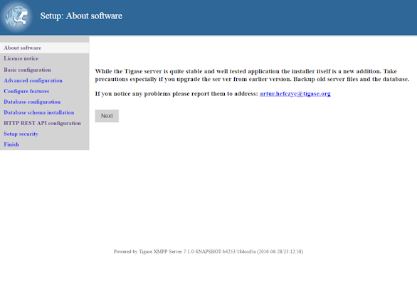
Read it and then click "Next"
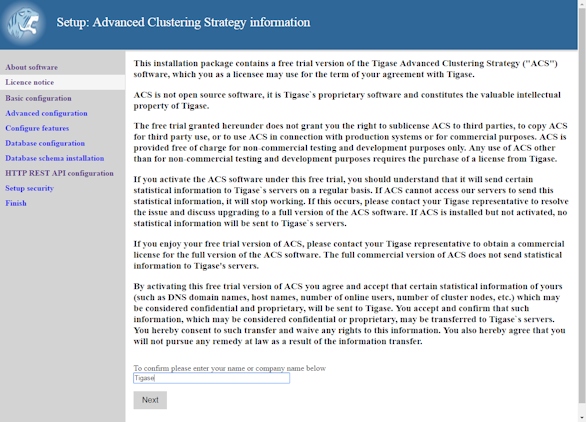
Here is some information about our commercial products and licensing. Please read though the agreement, type your name or company and click "Next".
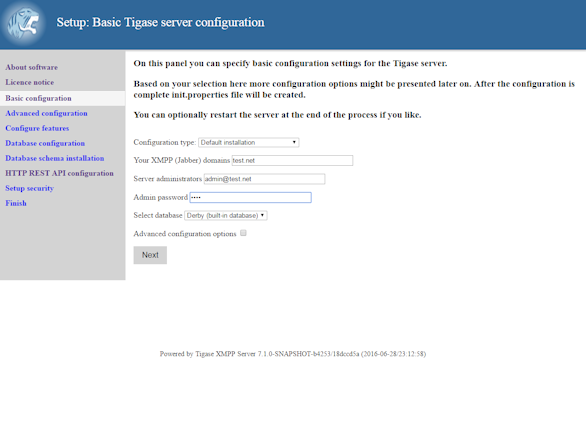
This page will look over your default configuration settings, these include the type, Domains you wish to use, and gives you a chance to specify an administrator for the domain. Also, you will be selecting what type of database Tigase server will be using.
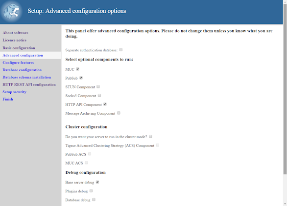
The Advanced configuration page. Select what components and configurations you need.
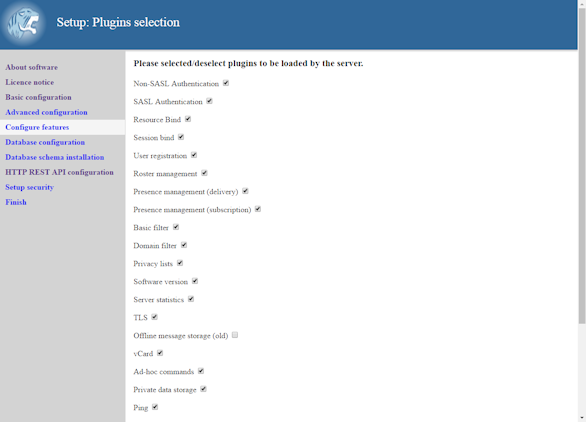
Plugins which will be loaded by the server, most plugins are enabled by default.
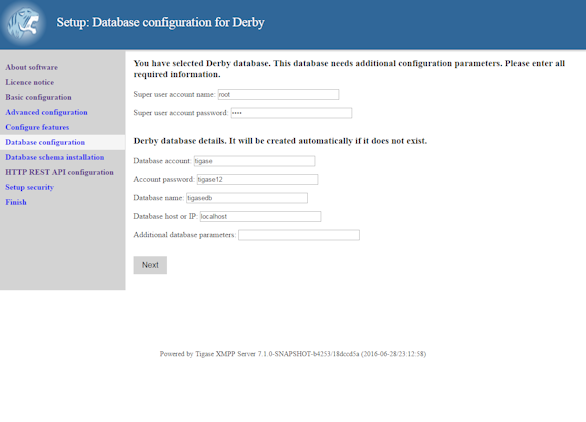
This is where the database schema is installed. BE SURE TO SPECIFY SUPER USER ACCOUNT AND PASSWORD
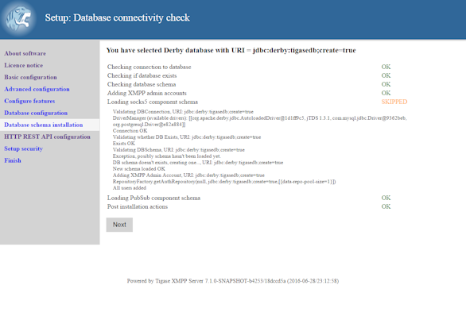
You should see a page like this after a successful database setup. This page will reveal any issues with your database setup such as invalid URIs, passwords, and schemas.
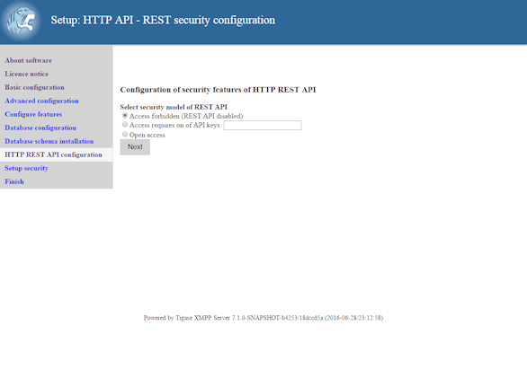
Next a page asking if you’d like to provide an API Access Key to access HTTP REST commands. It is highly recommended that you either specify an API key or block access. Open API keys allow any REST command to be interpreted by the server.
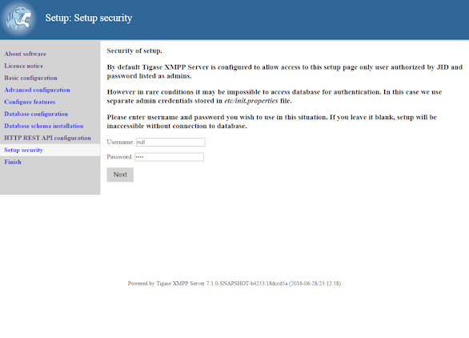
The Setup Access Page will be locked from the admin/tigase user as specified above. This is your chance to have the setup pages add a specific user in addition to admin accounts to re-access this setup process later. If left blank, only JIDs listed in admin will be allowed to access.
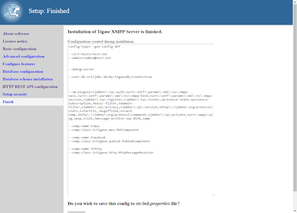
The installation is complete and this is what the init.properties file will look like. If you have a custom setup, or would like to put your own settings in, you may copy and past the contents here to edit the current init.properties file. Click "Save" to write the file to disk.
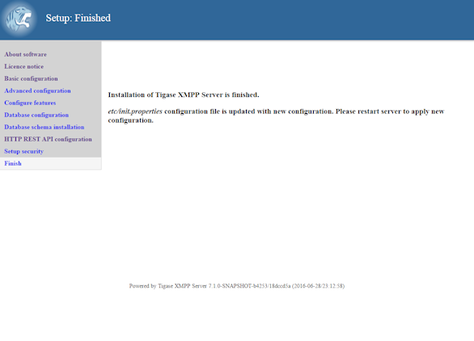
You have now finished the installation, proceed to the next step to restart the server.
It is recommended at this point to stop the server manually and restart it using the proper script for your OS. From the Tigase base directory enter
./scripts/tigase.sh stop
./scripts/{OS}/init.d/tigase start etc/tigase.confwhere {OS} is your type of Linux, gentoo, debian, mandriva, or redhat
To further fine tune the server you should edit etc/tigase.conf. Ensure JAVA_HOME path is correct, and increase memory if needed using JAVA_OPTIONS -Xmx (max), and -Xms (initial). You will need to direct Tigase to read settings from this file on startup as follows.
Everything should be running smooth at this point. Check the logfiles in logs/ if you experience any problems.
There are a few steps involved with setting up Tigase with the web installer in a Windows environment. Please follow this guide.
First step is to extract the dist-max archive in it’s entirety to the intended running directory. Once there, run the Setup.bat file inside the win-stuff folder. This will move the necessary files to the correct folders before Tigase begins operation.
From here, you have a few options how to run Tigase; run.bat will operate Tigase using a java command, or run.bat which will start Tigase using the wrapper. You may also install Tigase and run it as a service.
One this setup is finished, web installer will continue the same from here.